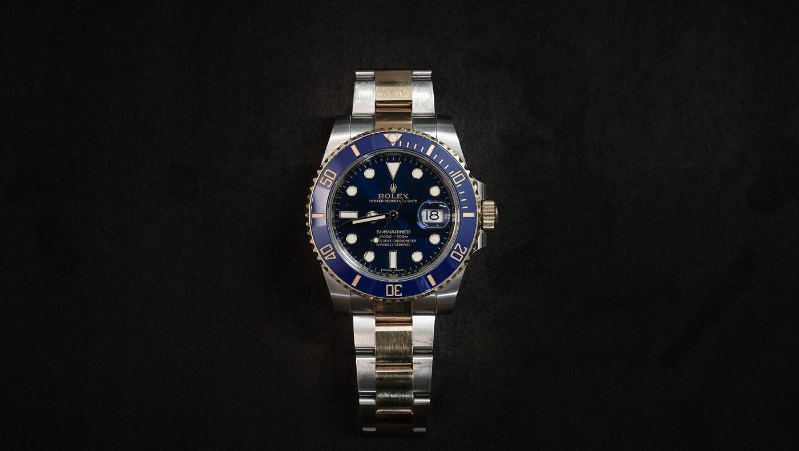

We honor mechanical timekeeping as living engineering art
Aperture Castle was created to restore reverence to mechanical watchmaking. In an era dominated by disposable quartz chips and digital screens, we protect the tactile soul of balance wheels, hairsprings, and hand-chamfered steel bridges.
A sanctuary for purists of micro-mechanics
Our guild was founded in Boston by watchmakers and lifelong collectors who grew weary of commercialized horology. Modern luxury boutiques frequently obscure the mechanical realities of their timepieces behind celebrity ambassadors and fabricated scarcity, leaving patrons uninformed about actual movement finishing or chronometric performance.
We designed Aperture Castle as an unpretentious atelier where collectors converse directly with the artisans who regulate their balances. We maintain a focused archive of verified mechanical references, allowing us to dedicate hundreds of bench hours to each individual caliber rather than rushing high-volume commercial turnover.
Every watch in our custody reflects genuine historical discipline: steel components hand-beveled with gentian wood sticks, jewels seated in mirror-polished chatons, and balance springs calibrated by ear and acoustic sensor.
Precision Bench Milestones
Hand-stitched saddle leather and bespoke ergonomics
A master caliber requires an equally distinguished binding. We partner with heritage French and Italian tanneries to handcraft custom straps from vegetable-tanned barenia calfskin, bridle leather, and organic canvas. Each strap is hand-pricked and sewn with beeswaxed linen thread using traditional two-needle saddle stitching.
Our edge finishing requires seven stages of heating, waxing, and burnishing with natural gum tragacanth, ensuring supple comfort against the wrist and resistance to climatic humidity. Hardware buckles are individually machined from marine-grade 316L stainless steel with hand-brushed facets.
Our Three Enduring Commitments
Radical Mechanical Honesty
We openly disclose every modification, service record, and amplitude reading. If an escapement shows natural age, we celebrate its patina rather than artificially masking its history.
Reversible Preservation
Our horologists adhere to strict museum conservation ethics. Any restoration performed on vintage calibers uses fully reversible methods, preserving historical material for future centuries.
Lifelong Stewardship
When you acquire a timepiece through Aperture Castle, our atelier remains your lifelong technical partner for periodic lubrication, water resistance testing, and timing calibration.
The Poetry of Skeletonized and Openworked Movements
Skeletonization represents the ultimate test of artisanal finishing. By paring away all non-structural brass and steel from the mainplate and bridges, the watchmaker transforms a functional machine into a suspended kinetic sculpture.
Every exposed interior angle must be beveled by hand at a precise 45-degree inclination, followed by diamond paste polishing to produce mirror-like specular reflections. When viewed through sapphire crystal, the viewer witnesses the continuous breathing of the hairspring and the hypnotic rotation of the train gears.